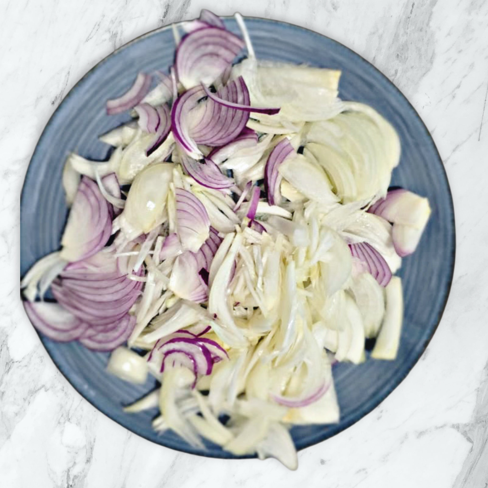
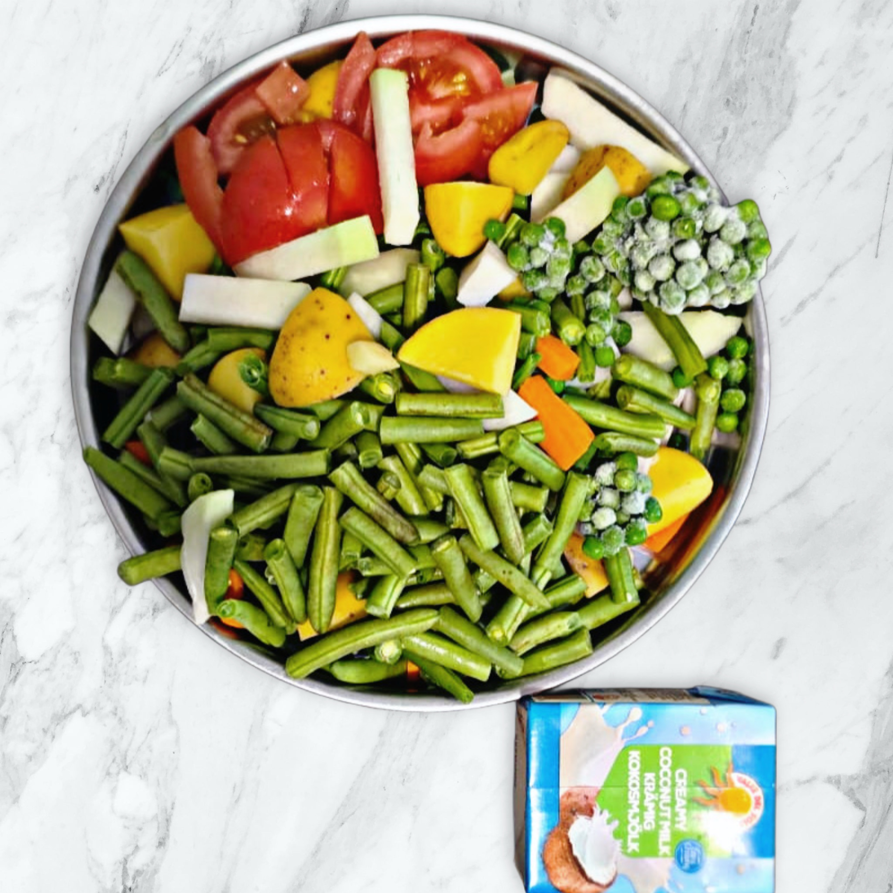
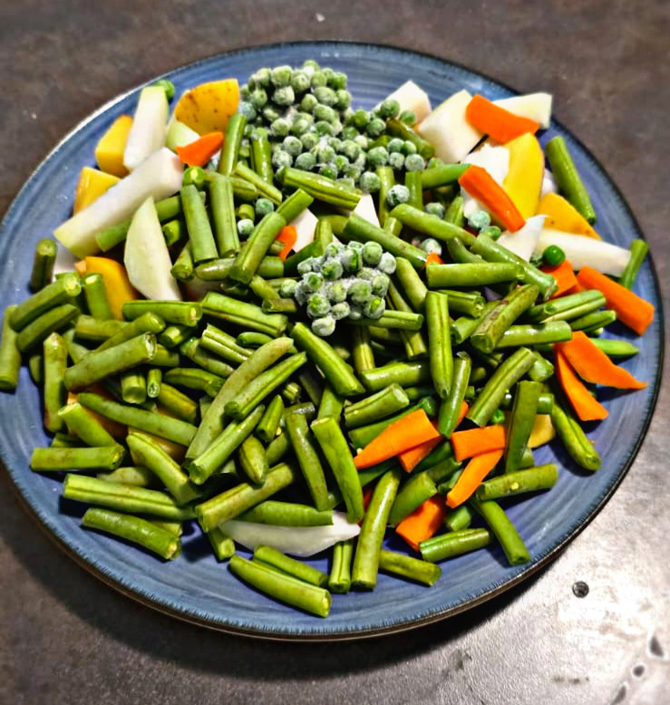
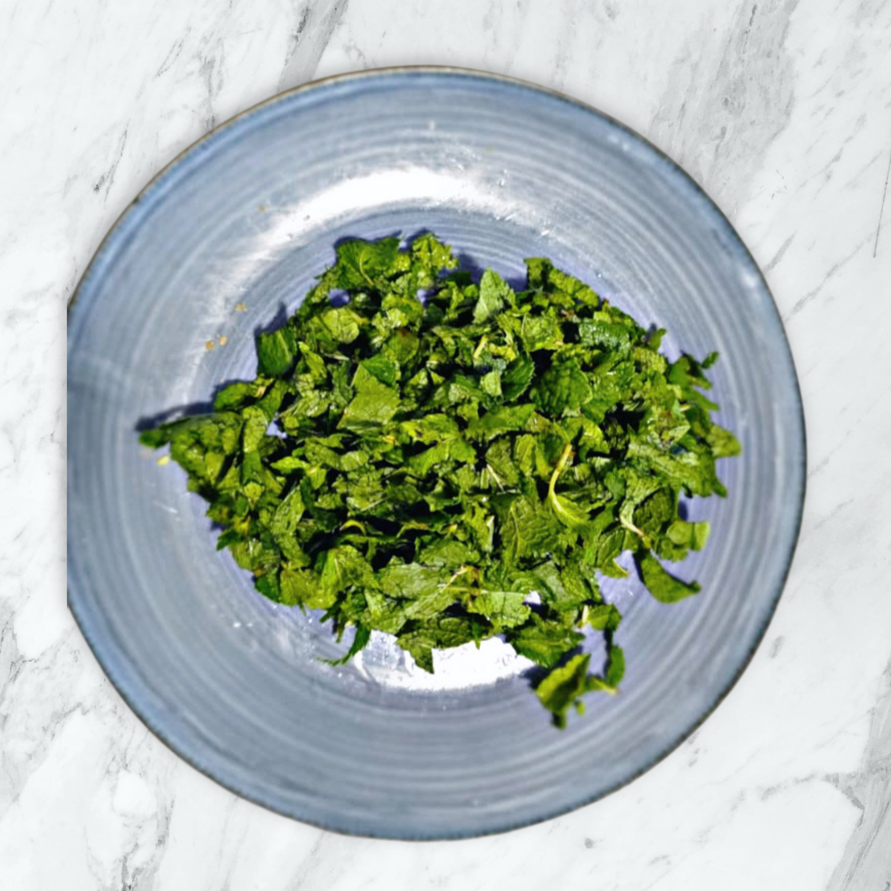
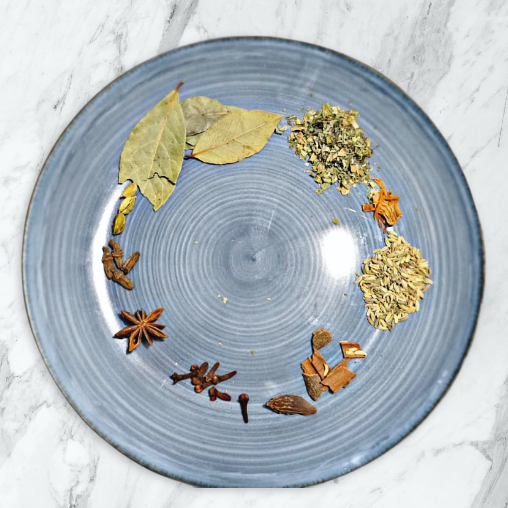
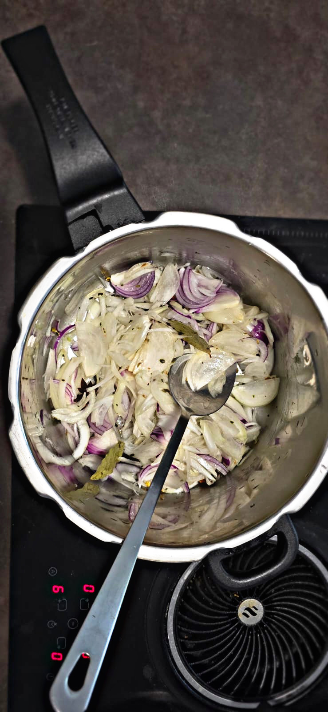
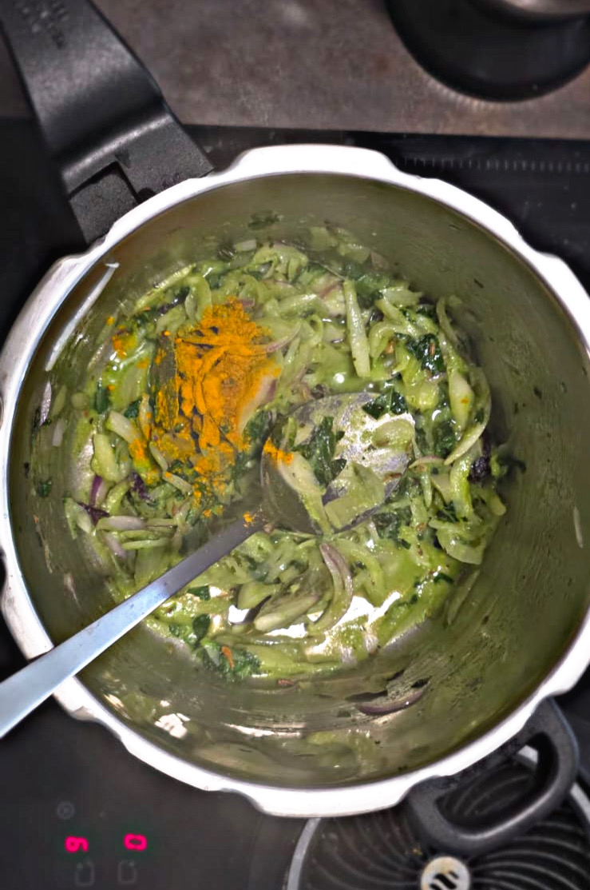
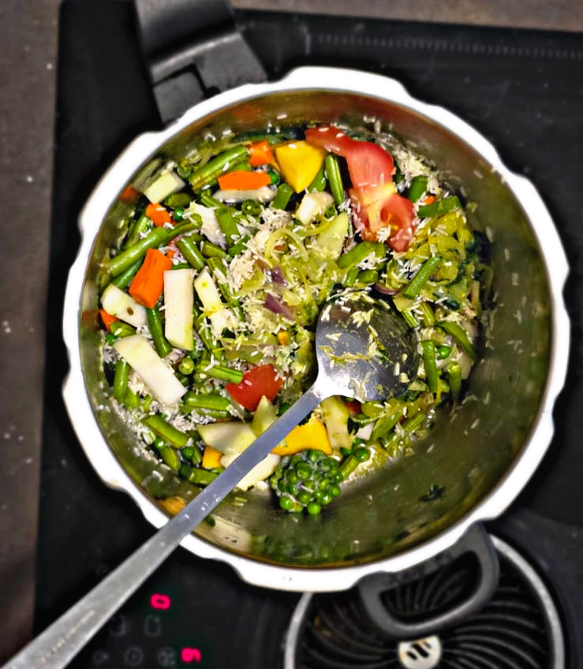
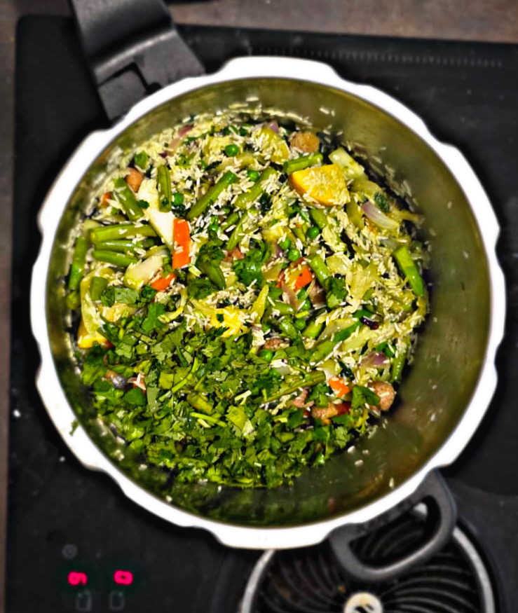
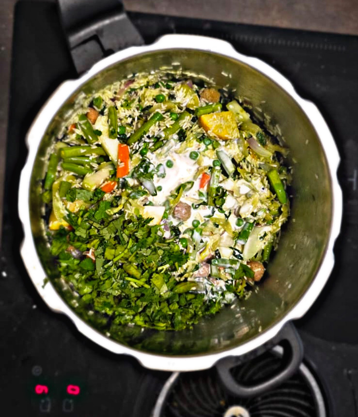

Tharakari Pulao - "ತರಕಾರಿ ಪುಲಾವ್" - Vegetable Pulao
Aromatic and flavorful vegetable pulao made with basmati/sona masuri rice, fresh vegetables, and aromatic spices. This one-pot dish is perfect for lunch or dinner, combining the goodness of mixed vegetables with the fragrant essence of whole spices and herbs.

Ingredients
- 2 cups Sona Masuri Rice/Basmati Rice
- 1 plate mixed vegetables (carrots, beans, peas, potatoes, kohlrabi etc.)
- 1 large onion, finely chopped
- 2 tomatoes, chopped
- Handful of finely chopped pudina leaves
- 5-6 green chilies, slit
- 1 inch ginger, grated
- 4-5 garlic cloves, minced
- 2 bay leaves
- 4-5 cloves
- 2-3 cardamom pods
- 1 inch cinnamon stick
- 1 teaspoon cumin seeds
- 1/2 teaspoon turmeric powder
- 1 small packet of coconut milk
- 1 teaspoon garam masala
- 1/4 cup fresh coriander leaves
- 1/4 cup mint leaves
- 3 tablespoons ghee or oil
- Salt to taste
- 4 cups water
Instructions
-
Prepare the Rice
Wash the basmati rice thoroughly and soak it in water for 30 minutes. Drain and set aside.
-
Prepare the Vegetables
Wash and chop all the vegetables. Finely chop onions, tomatoes etc.
    -
Heat Oil and Add Whole Spices
Heat ghee or oil in a large pot. Add bay leaves, cloves, cardamom pods, cinnamon stick, and cumin seeds. Let them splutter for a few seconds.
 -
Sauté Onions and Aromatics
Add chopped onions and sauté until they turn translucent. Add ginger-garlic paste and green chilies. Cook for 2-3 minutes until fragrant.
 -
Add Vegetables and Spices
Add the mixed vegetables and cook for 3-4 minutes. Add turmeric powder, garam masala, and salt. Mix well.
  -
Add Rice and Water
Add the drained rice and gently mix with the vegetables. Add 4 cups of water and bring to a boil.
 -
Add Coconut Milk and Pudina Leaves
Add the coconut milk and pudina leaves. Mix well.
 -
Cook the Pulao
Reduce heat to low, cover the pot, and cook for 15-20 minutes until the rice is fully cooked and water is absorbed.
-
Add Fresh Coriander and Serve
Once cooked, add fresh coriander leaves. Gently fluff the rice with a fork and let it rest for 5 minutes before serving.
Notes & Variations
Notes
- Soaking the rice for 30 minutes ensures even cooking and fluffy texture.
- You can use any combination of vegetables you prefer.
- For a richer flavor, use ghee instead of oil.
- Don't stir the rice too much while cooking to avoid breaking the grains.
- Let the pulao rest for 5 minutes after cooking for better texture.
Variations
- Add paneer cubes for a protein-rich version.
- Include cashews and raisins for a festive touch.
- Try with brown rice for a healthier option.
- Add saffron soaked in warm milk for a royal pulao.
- Use coconut milk instead of water for a creamy texture.
Comments